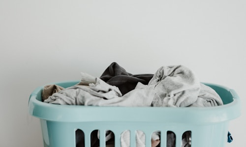

ভূমিকা
ওয়াশিং মেশিন আধুনিক জীবনের একটি অপরিহার্য যন্ত্র। দৈনিক কাজের চাপে আমরা প্রতিদিন এক সময় কাপড় ধোয়ার জন্য সময় বের করতে পারি না। এমন পরিস্থিতিতে ওয়াশিং মেশিন আমাদের সবচেয়ে বড় সহকারী হয়ে ওঠে। তবে যেমন অন্য যেকোনো ইলেকট্রিক্যাল যন্ত্র, ওয়াশিং মেশিনেরও কিছু সাধারণ সমস্যা দেখা দিতে পারে। এই সমস্যাগুলো সময়মতো না ধরা পড়লে বড় সমস্যায় পরিণত হতে পারে। আজকের এই ব্লগে আমরা ওয়াশিং মেশিনের সবচেয়ে সাধারণ ৫টি সমস্যা এবং তার সমাধান নিয়ে বিস্তারিত আলোচনা করব।
১. পানি আসছে না
ওয়াশিং মেশিনে পানি না আসা একটি খুবই সাধারণ সমস্যা। এর পেছনে অনেকগুলো কারণ থাকতে পারে। প্রথমে চেক করুন, আপনার বাড়ির পানির সরবরাহ স্বাভাবিক কিনা। পানির সরবরাহ ঠিক থাকলে, তাহলে ওয়াশিং মেশিনের ইনলেট ভাল্ভ চেক করুন। এই ভাল্ভ সাধারণত ওয়াশিং মেশিনের পেছনের দিকে থাকে। ইনলেট ফিল্টার ধুলা দিয়ে আবৃত হলে পানির প্রবাহ বাধাগ্রস্ত হয়।
সমাধান: ওয়াশিং মেশিনের পেছনের দিকে ইনলেট হোজ খুলুন। এরপর ছোট একটি ব্রাশ দিয়ে ফিল্টার পরিষ্কার করুন। ফিল্টারে জমা চুন ও ধুলা পরিষ্কার করলে পানির প্রবাহ স্বাভাবিক হয়ে যাবে। যদি এই সমস্যা থাকে, তাহলে ওয়াটার ইনলেট ভাল্ভ প্রতিস্থাপন করতে হতে পারে। এই কাজটি পেশাদার টেকনিশিয়ানের সাহায্যে করানো উচিত।
২. স্পিন হচ্ছে না
স্পিন না হওয়া ওয়াশিং মেশিনের আরেকটি সাধারণ সমস্যা। স্পিন না হলে কাপড় পুরোপুরি শুকায় না এবং ভেজা অবস্থায় থেকে যায়। এর কারণ হতে পারে বেল্ট ঢিলে হওয়া, মোটরের সমস্যা বা ক্লাচের সমস্যা। কিছু ক্ষেত্রে স্পিন সেন্সরের সমস্যাও এই সমস্যা তৈরি করতে পারে।
সমাধান: প্রথমে ওয়াশিং মেশিনের কাভার খুলে বেল্ট চেক করুন। বেল্ট ঢিলে থাকলে এটিকে টাইট করুন। বেল্ট চিরে গেলে নতুন বেল্ট বসানো উচিত। মোটরের বুশিং ও বিয়ারিংয়ের সমস্যা থাকলে সেগুলো প্রতিস্থাপন করতে হবে। স্পিন সেন্সরের সমস্যা থাকলে সেটি প্রতিস্থাপন করতে হবে। এই সব কাজ পেশাদার টেকনিশিয়ানের সাহায্যে করানো উচিত।
৩. অতিরিক্ত কম্পন
ওয়াশিং মেশিন চালানোর সময় অতিরিক্ত কম্পন বা কম্পন হওয়া একটি সাধারণ সমস্যা। এর কারণ হতে পারে ওয়াশিং মেশিনের পায়া সমান না হওয়া, ড্রামের বিয়ারিংয়ের সমস্যা বা স্প্রিংয়ের সমস্যা। অনেক সময় ওয়াশিং মেশিনের সামনে ভারী কাপড় রাখলেও কম্পন বাড়ে।
সমাধান: ওয়াশিং মেশিনের চারটি পায়া মেলাতে হবে। পায়াগুলো ঘুরিয়ে উঁচু-নিচু করা যায়। সমতল মাটিতে ওয়াশিং মেশিন রাখুন। ড্রামের ভেতরে কোনো কিছু আটকে থাকলে সেটি বের করুন। বিয়ারিংয়ের সমস্যা থাকলে সেটি প্রতিস্থাপন করতে হবে। এছাড়া ওয়াশিং মেশিন চালানোর সময় একই ধরনের ভারী কাপড় একসাথে না রাখার চেষ্টা করুন।
৪. পানি লিক হচ্ছে
ওয়াশিং মেশিন থেকে পানি লিক হওয়া একটি গুরুতর সমস্যা। এর কারণ হতে পারে হোজ পাইপের ফাটল, ড্রেইন পাম্পের সমস্যা বা ইনলেট ভাল্ভের সমস্যা। পানি লিক হলে মেঝে ও দেয়াল ভেজতে পারে, যা দীর্ঘমেয়াদে ক্ষতিকর।
সমাধান: প্রথমে পানির উৎস খুঁজে বের করুন। হোজ পাইপে ফাটল থাকলে সেটি প্রতিস্থাপন করুন। ড্রেইন পাম্পের সীল চেক করুন। সীল নষ্ট হলে নতুন সীল বসানো উচিত। ইনলেট ভাল্ভের ফাটল থাকলে ভাল্ভ প্রতিস্থাপন করুন। পানি লিকের সমস্যা সমাধান না হলে অবশ্যই পেশাদার টেকনিশিয়ানের সাহায্য নিন।
৫. গন্ধ আসছে
ওয়াশিং মেশিনে দুর্গন্ধ আসা একটি সাধারণ সমস্যা। এর প্রধান কারণ হলো ড্রামের ভেতরে জমা ময়লা, সাবানের অবশিষ্টাংশ এবং ব্যাকটেরিয়া। বিশেষ করে সাদা রঙের ওয়াশিং মেশিনে এই সমস্যা বেশি দেখা যায়। গন্ধ থাকলে কাপড়েও দুর্গন্ধ আসতে পারে, যা অত্যন্ত অপ্রীতিকর।
সমাধান: নিয়মিত ওয়াশিং মেশিন পরিষ্কার করুন। প্রতি মাসে একবার গরম পানি ও ভিনেগার দিয়ে ড্রাম পরিষ্কার করুন। ২ কাপ ভিনেগার ও ১ কাপ বেকিং সোডা ড্রামে ঢেলে ৩০ মিনিট গরম পানিতে চালান। এছাড়া প্রতিবার কাপড় ধোয়ার পর ড্রামের ঢাকনা খুলে রাখুন, যাতে ভেজা পানি শুকিয়ে যায়। গামলার ফিল্টারও নিয়মিত পরিষ্কার করুন।
রক্ষণাবেক্ষণের টিপস
ওয়াশিং মেশিনকে দীর্ঘদিন ভালো অবস্থায় রাখতে কিছু সাধারণ রক্ষণাবেক্ষণের টিপস অনুসরণ করুন:
- প্রতিবার কাপড় ধোয়ার পর ড্রামের ভেতর ও বাইরে পরিষ্কার করুন
- নিয়মিত ভিনেগার ও বেকিং সোডা দিয়ে ড্রাম পরিষ্কার করুন
- ড্রামের ফিল্টার প্রতি সপ্তাহে পরিষ্কার করুন
- ওয়াশিং মেশিনকে সমতল জায়গায় রাখুন
- অতিরিক্ত ভারী কাপড় একসাথে না রাখার চেষ্টা করুন
- ড্রামের ঢাকনা খুলে রাখুন, যাতে গলবিল না ধরে
- ইলেকট্রিক্যাল সংযোগ সঠিকভাবে রাখুন
এই সব টিপস অনুসরণ করলে আপনার ওয়াশিং মেশিন দীর্ঘদিন ভালো অবস্থায় থাকবে এবং কম সমস্যা হবে।
উপসংহার
ওয়াশিং মেশিনের সাধারণ সমস্যাগুলো সময়মতো ধরা পড়লে সহজেই সমাধান করা যায়। তবে কিছু সমস্যা এমনও থাকতে পারে যেগুলো নিজে সমাধান করা কঠিন। এমন পরিস্থিতিতে পেশাদার টেকনিশিয়ানের সাহায্য নেওয়াই সেরা।
যদি আপনি মিরপুর, ঢাকায় থাকেন এবং আপনার ওয়াশিং মেশিনে কোনো সমস্যা থাকে, তাহলে Xpert Service BD এর সাথে যোগাযোগ করুন। আমাদের অভিজ্ঞ টেকনিশিয়ানরা আপনার ওয়াশিং মেশিনের সমস্যা দ্রুত সমাধান করে দেবেন।